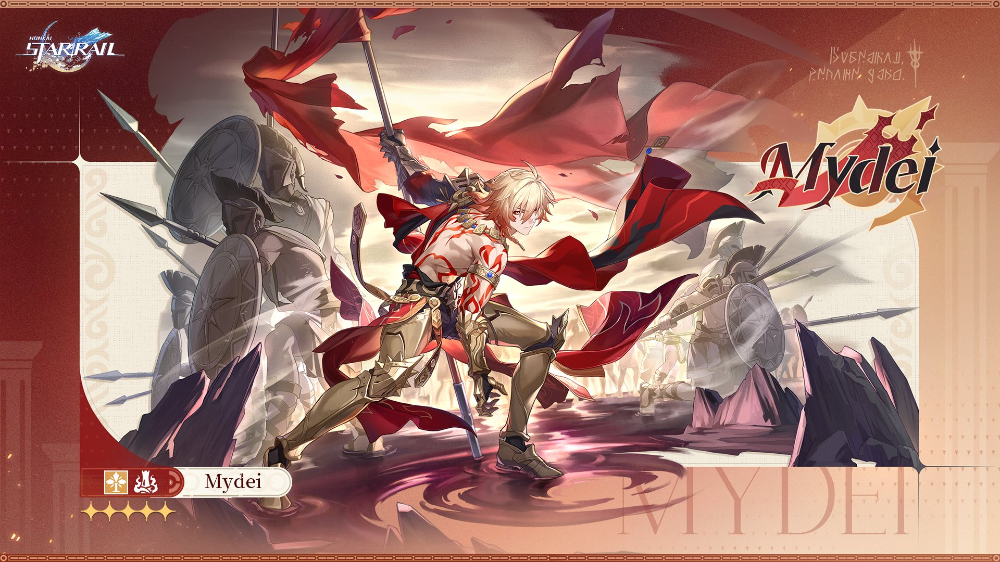
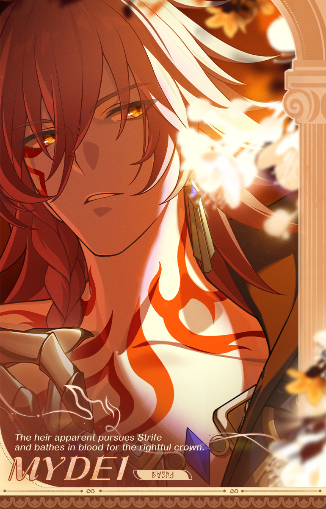

1 / 2

Amphoreus' Saga of Heroes | Mydei
"I am the crown prince of Kremnos 'Mydeimos,' and also the warrior of Okhema 'Mydei.' If you want to know me better, observe me in battle or fight me yourself."
▌ The Last Prince: Mydeimos
Kremnos, swallowed by mist! City riven between chaos and war! The blood of patricide flows through its royal line, and its god bears the title of calamity.
The undying Mydeimos, the lion apart from the rest. O Chrysos Heir that seeks the Coreflame of Strife, you must suffer a thousand deaths, be bathed in blood on the path home, and bear the madness of fate alone, for one was must slay a god to become one. Iron-hooves pound across the wilderness for the campaign, and must eventually soak in the blood of their homeland.
Affiliated City: Castrum Kremnos
Divine Authority: Lance of Fury, Nikador
2 / 2

Ordain of the Chrysos Heir（2）
Golden blood fell to the ground, as a distant prophecy resounded.
The scions of the Chrysos Heir gather here and embark, walking the path to deicide...
"Most 'Hero's Journeys' in the universe are just dice tosses THEY threw on a whim... Will your answer be any different, Amphoreus?"